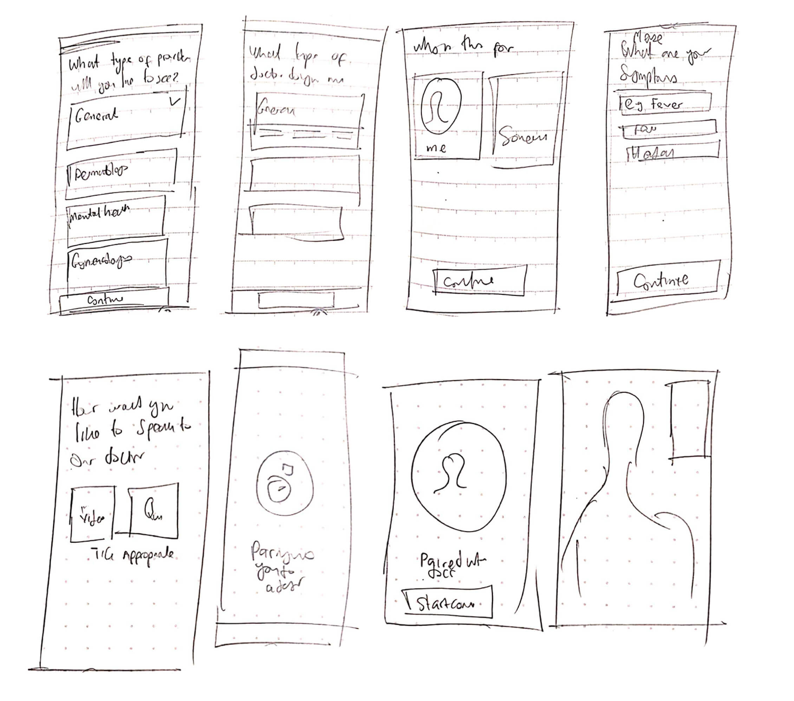

Iterations & Adjustments
Once I got my core task flow all together I started to ideate on what the interface of my application could be from. From early sketches to low-fidelity designs.

Layout Validation
I created a first level of wireframes to validate the design layout with my users. My test users found it really hard to find the main action of the application. In the first layout the main action button "See a Doctor" was obscure and the bottom menu Tab needed to be revamped.
I also had a feature where a user would connect with a doctor, I got feedback that the users would want to see more information and qualifications of the doctor.
Learning from Medical Professionals
I tested my applications with 2 medical doctors and this revealed a huge flaw in my user flow. I learnt that medical doctors have a clerking process when trying to diagnose an illness.
The Medical Clerking Process:
- Presenting complaint
- History of presenting complaint
- Past medical history
- Drug History
- Family history
- Social History
This revealed holes in my flow and I made changes to how I asked about symptoms from my users. I changed the whole flow and this resulted in better success.

Symptom Search Refinement
I implemented a feature where users could search for their symptoms but from testing I was able to find that users could not find the right words to describe how they felt. I made adjustments after some iterations.